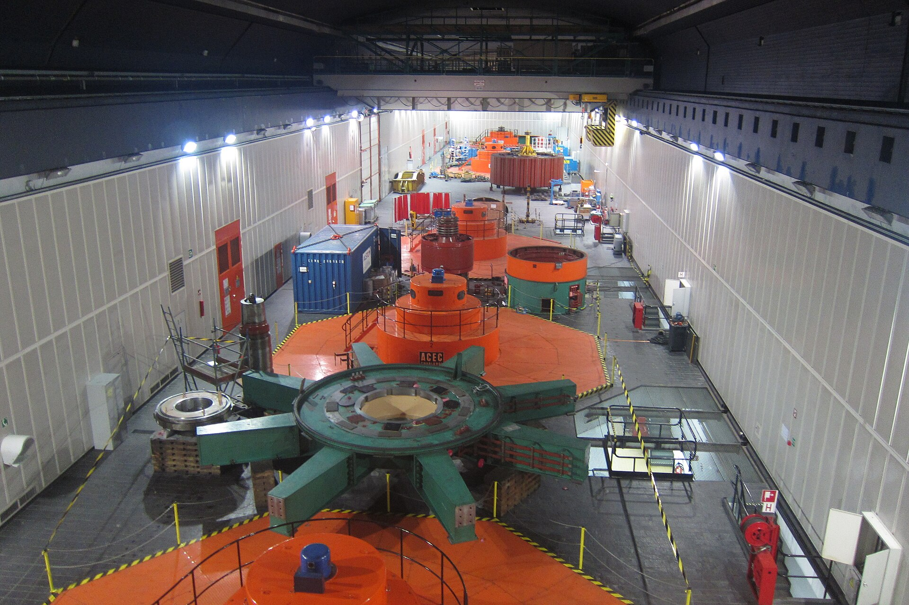
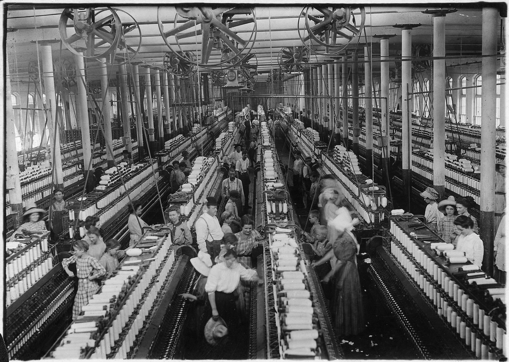

Decisions travel.
Where one lands is knowable before it is made.
An intelligence layer for the decisions that reach further than anyone can see. ESG is where we begin.
Bring us a decisionThe problem was never a lack of data. It is that a consequential decision belongs to no single system.
Finance holds the numbers and the capital plan, and is asked to approve a business case built on figures gathered somewhere else.
Operations holds the assets, their age, their failures and the shutdown window, and rarely the carbon or the compliance exposure attached to them.
Sustainability holds the impact, usually once a year, in a format built for a filing rather than for a decision taken in March.
Risk and legal hold the exposure, and typically see the decision after it has been framed, when the alternatives have already gone.


Decisions
do not stop.
They keep moving. Scroll, and watch one arrive in six places.
- BusinessCapital, margin, the plan it was approved against.
- PeopleWho retrains, who is exposed, who leaves.
- ResourcesWhat is consumed, what is recovered, what is thrown.
- EnvironmentEmissions in operation, and the ones already embodied.
- RiskWhat becomes more likely, and what becomes survivable.
- ComplianceThe threshold today, and the one arriving.
What the
system does.
Not a dashboard. Dashboards report what happened inside one boundary. Decisions do not have boundaries.
- It brings the context together Data, conditions and constraints from the systems that already hold them.
- It finds the relationships Where an asset, a target, a supplier and a threshold touch each other.
- It surfaces the consequences Direct and indirect, for each option still open, before one is chosen.
- It leaves the decision with you A connected view of the trade-offs. The judgement stays human.
ESG, first.
Not because it is fashionable. Because it is where the gap between what an organisation can report and what it can decide with is widest. Most ESG software helps you measure. The question we are interested in is what happens when sustainability becomes part of the decision itself.
Do you measure Scope 1 and Scope 2 emissions?
The first question of the assessment. Scope 1 is what you burn; Scope 2 is the electricity you buy.
Nothing is sent anywhere. Rather not answer?
So when you ask: should we replace this asset?
Fourteen questions left, about five minutes. You can change this answer there too.
A question that
would not go away.
For over a decade I worked across people, organisations, technology and business transformation, and watched consequential decisions being made with the information scattered across different systems. The data existed. The context was fragmented. The person deciding was expected to connect it all.
BVANTRIX began with one question: what if technology could help us understand the consequences of a decision before we make it? Not to decide for us. To make human judgement better informed.
ESG is our first application. Decision intelligence is the larger ambition.
Too consequential
to see alone.
Bring us one. We will show you what sits behind it, what it touches, and what becomes possible when those connections are visible.